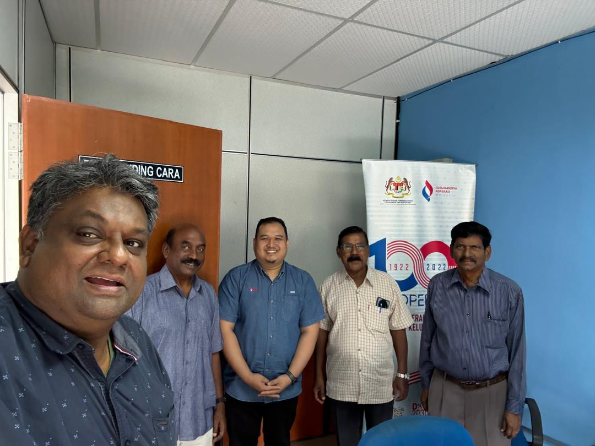
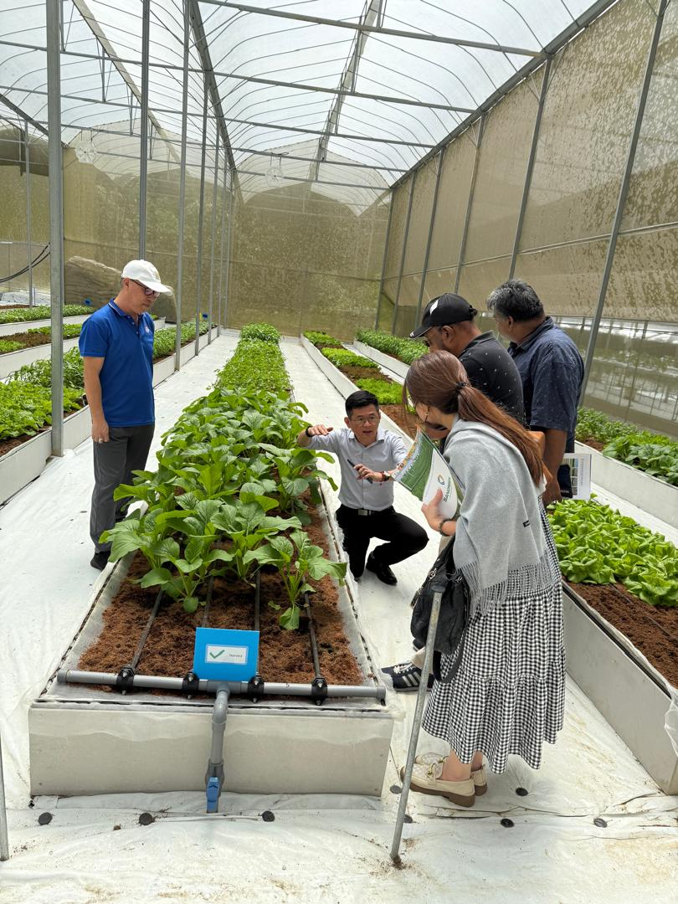
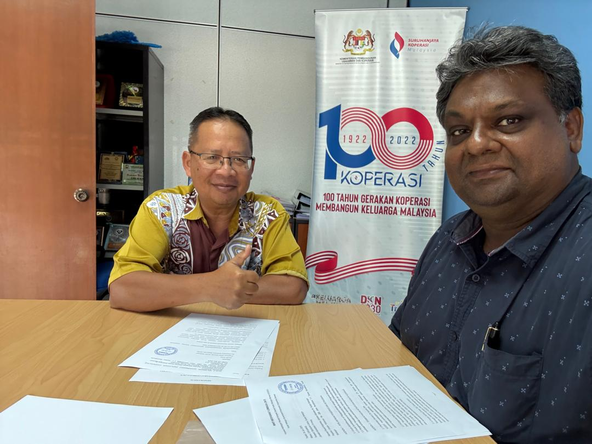
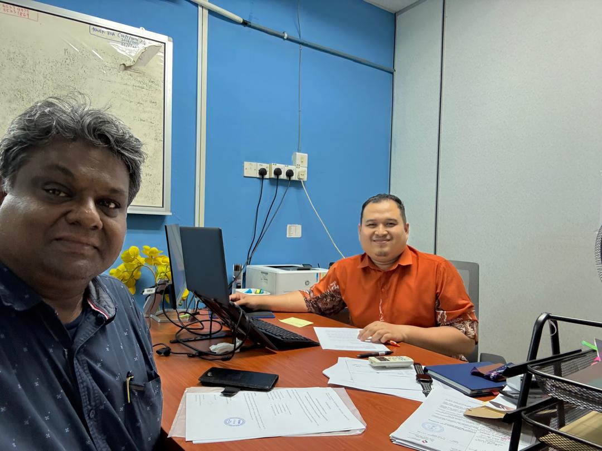
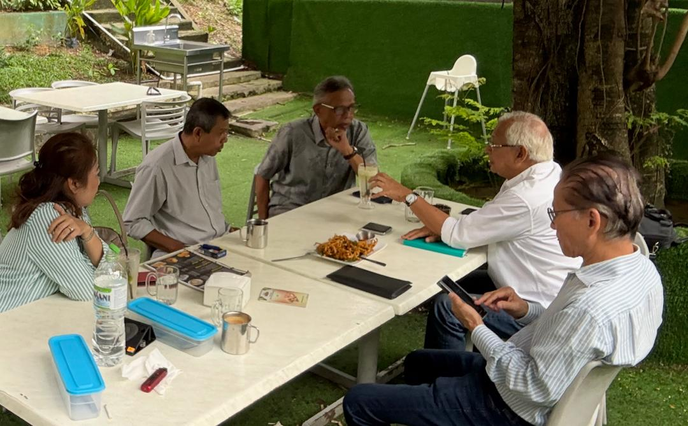
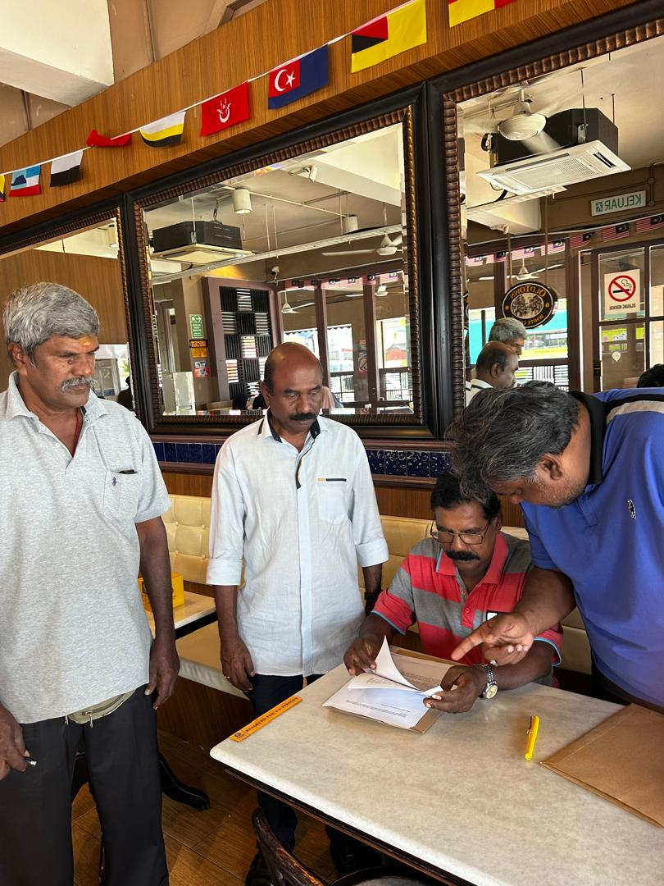
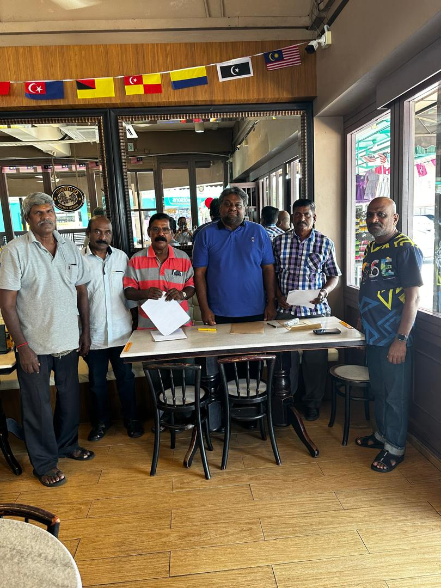
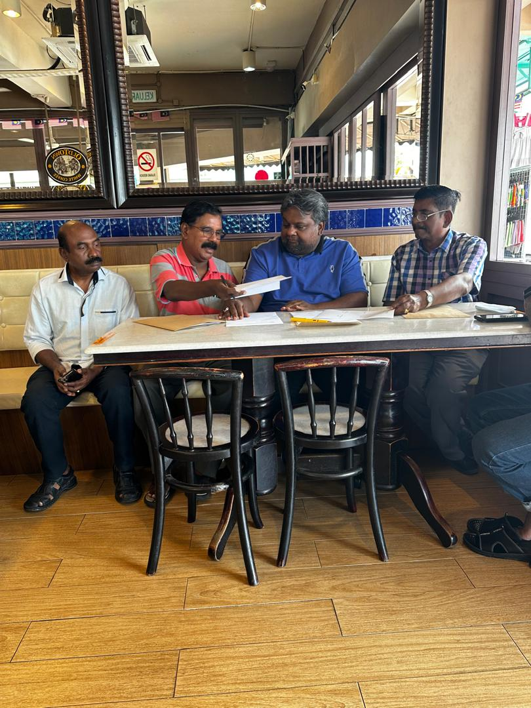
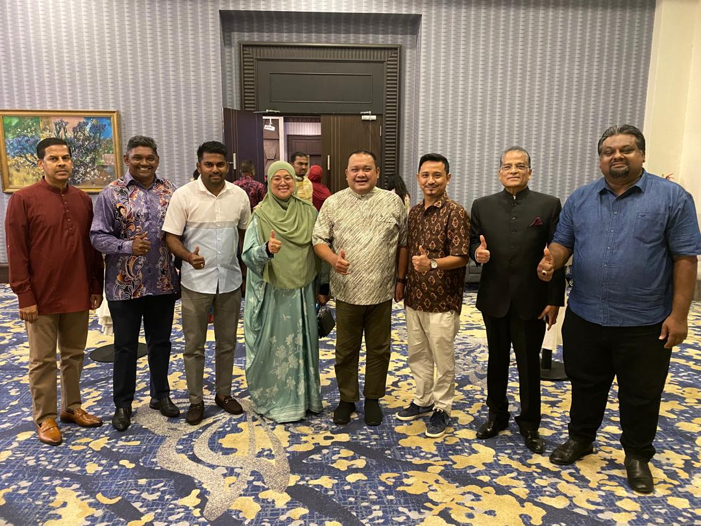

Visi: Menjadi koperasi kluster kerajaan yang memartabatkan kebajikan penjawat awam melalui pembiayaan inovatif dan simpanan berteraskan integriti.
Learn MoreKoperasi Kakitangan Kerajaan Daerah Kuala Selangor Berhad (KSGEC) ialah antara koperasi tertua di tanah air, ditubuhkan secara rasmi pada 7 Mei 1932 ketika negara masih berada di bawah naungan pentadbiran British. Kewujudannya merupakan manifestasi kesedaran awal penjawat awam untuk melindungi maruah serta kebajikan ekonomi mereka melalui sistem sokongan berasaskan semangat gotong-royong, kepercayaan, dan nilai integriti.
Sejak sebelum kemerdekaan, KSGEC telah memainkan peranan penting sebagai badan sokongan kewangan dan sosial kepada penjawat awam. Ia wujud sebagai reaksi terhadap tekanan sistem kewangan yang tidak mesra serta pinjaman yang menindas termasuk aktiviti pemberi pinjam wang tidak berlesen. Koperasi ini menjadi pelindung maruah dan kehormatan penjawat awam.
Menjelang ulang tahun ke-100 pada tahun 2032, KSGEC beriltizam memperluaskan pelan perlindungan ini ke peringkat nasional. Visi kami adalah agar manfaat yang dinikmati penjawat awam di Kuala Selangor dapat dirasai oleh lebih 1.8 juta penjawat awam di seluruh negara — membina masa depan yang lebih inklusif, adil, dan sejahtera.
Pelan strategik KSGEC dalam memperkukuh kebajikan penjawat awam melalui misi, objektif, modus operandi, dan analisis risiko yang jelas serta berakauntabiliti.








